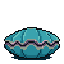
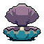
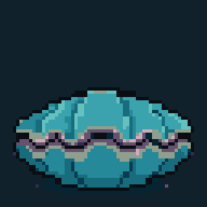
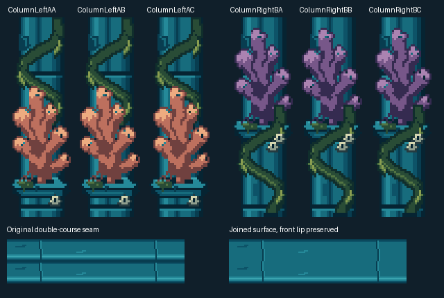

The two floor courses now read as one surface. The clam has a rounded closed shell and a connected opening hinge. Two corals sway occasionally by one native pixel while their stone bases stay fixed.
Actual Unity art-only scene captures. Original assets, old scenes, characters, UI and gameplay remain preserved. No production import or merge. PixelLab: 13 generations (still plus three animation trials); rejected trials are retained.



1080x1920 closed · 1080x1920 open · Lossless Unity animation · Validation
